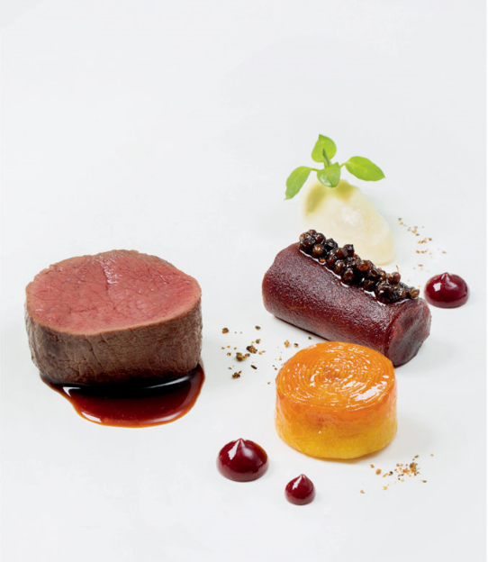

About Author
Allan is a full time software engineer, who is a food enthusiast during his free time
This blog was created for people who also are like to cook and those who just like to eat.
Allan created this platform for people to to share the food they like to eat, recipes they
like to cook, tips and tricks they've picked up, and their favorite dishes.